A quattro metri si legge la testata verde con la parola che conta per chi organizza: la data. A un metro il visitatore trova le date libere e come chiedere la sua.
A terra un triangolo verde segna il punto in cui il pubblico incontra il robot, sempre alla stessa distanza di sicurezza. Il calendario è un pannello magnetico sostituibile. Date, prezzo e trasporto sono di esempio.
Totem2000 mm